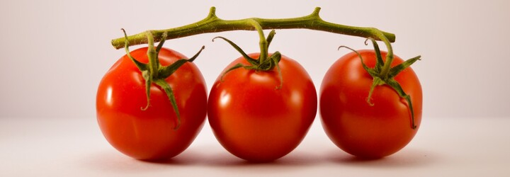

Rajčata se pěstují téměř ve všech zemích světa. V roce 2020 bylo podle Organizace pro výživu a zemědělství OSN na světě sklizeno 187 milionů tun rajčat. Největším producentem byla Čína s 34,67 % světové produkce rajčat. V České republice bylo v témže roce sklizeno 8 730 tun rajčat.[2][3] Nástup hydroponního pěstování ve sklenících umožňuje sklízet lokálně zralé plody po celý rok i mimo pěstební sezónu. Asi desetinu spotřeby rajčat v ČR, tj. 6 500 tun ročně dokáží pokrýt plody vypěstované firmou Agro Kadaň (vlastněná společností Solotron) podnikatele Vladimíra Schmalze.[4] Rajčata zde pěstují hydroponicky ve vertikálních sklenících, k jejichž vytápění využívají odpadové teplo z blízké elektrárny Tušimice II. K závlaze využívají filtrovanou dešťovou vodu a květy opylují za pomoci čmeláků.[5]

Alan Deutsch, 2A